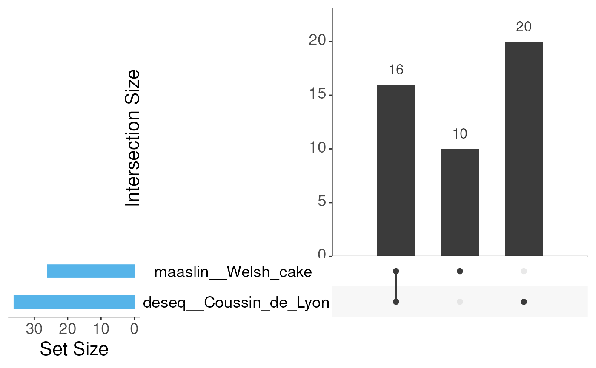

Plot results using UpSet plot
Arguments
- rec
A prepped
Recipeobject.- steps
Character vector with step_ids to take in account.
- ordered_by
How the intersections in the matrix should be ordered by. Options include frequency (entered as "freq"), degree, or both in any order.
- font_size
Size of the font.
- target
Optional modeled target to include.
- contrast_id
Optional modeled contrast identifier to include.
Value
UpSet plot, or invisible NULL with an informational message when
no significant taxa are available for the selected hypotheses.
Examples
data(test_prep_rec)
if (requireNamespace("UpSetR", quietly = TRUE)) {
## UpSet plot of shared discoveries
intersection_plt(test_prep_rec)
## Order intersections by the number of methods involved
intersection_plt(test_prep_rec, ordered_by = "degree")
}
#> Warning: `aes_string()` was deprecated in ggplot2 3.0.0.
#> ℹ Please use tidy evaluation idioms with `aes()`.
#> ℹ See also `vignette("ggplot2-in-packages")` for more information.
#> ℹ The deprecated feature was likely used in the UpSetR package.
#> Please report the issue at <https://github.com/hms-dbmi/UpSetR/issues>.
#> Warning: The `size` argument of `element_line()` is deprecated as of ggplot2 3.4.0.
#> ℹ Please use the `linewidth` argument instead.
#> ℹ The deprecated feature was likely used in the UpSetR package.
#> Please report the issue at <https://github.com/hms-dbmi/UpSetR/issues>.
